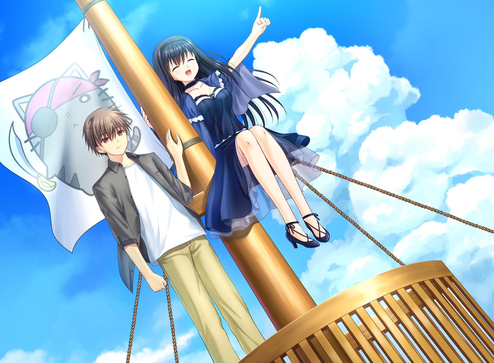

Olá, essa será minha primeira vez escrevendo nesse blog meio mal feito(foi programado em HTML e CSS por mim mesmo que não sou nada bom nisso). Em primeiro lugar, gostaria de lembrar que já faz 10 meses desde a criação dessa Fansub e até agora não tinha nenhum lugar para ver as notícias dos projetos e tals. Pois bem, acabei de criar.
Agora eu irei explicar um pouco da história da fansub. Em meados de dezembro, eu pretendia criar uma comunidade de visual novels BRs, e a melhor forma que pensei foi em criar uma fansub. Na procura do primeiro projeto, lembrei de uma das primeiras VNs que joguei, e essa era Yosuga no Sora. Então, após me frustrar muito tentando traduzir Grisaia, decidi traduzir o YnS. Após 6 meses, consegui terminar a rota da Sora.
Nesse longo caminho, usei meu server do Discord como métrica para medir a popularidade e também para conseguir criar uma pequena comunidade que cresceu mais rápido do que eu podia esperar.
Eu sou um grande fã da Key(principalmente as obras escritas pelo Jun Maeda), tendo zerado diversos jogos, como Air, Clannad, Summer Pockets e o meu favorito, Little Busters(por isso meu nick é Rin-chan).
Depois que eu terminei Summer Pockets percebi que tive uma excelente experiência com a VN, me fazendo ter tanta vontade de abrir um projeto novo mesmo não tendo terminado o primeiro. Eu espero que as pessoas aproveitem dessa linda VN e tirem algumas reflexões de vida (Clique AQUI para ver o vídeo da VN em PT). Também gostaria de saber se vocês querem uma resenha ou algo do tipo. Eu gostaria de usar mais esse espaço do Blog para comentar minha opinião.
Como já me cansei escrevendo, então… Até a próxima postagem.